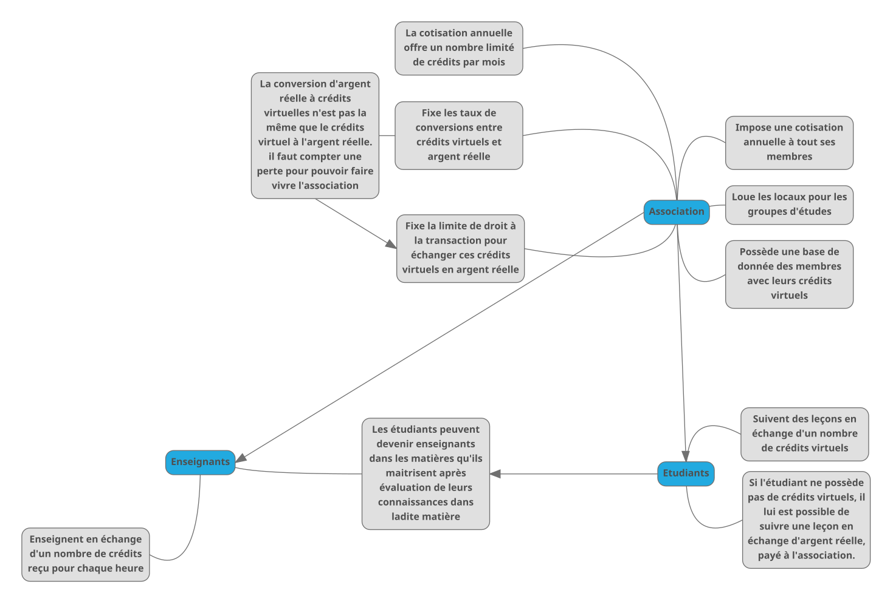
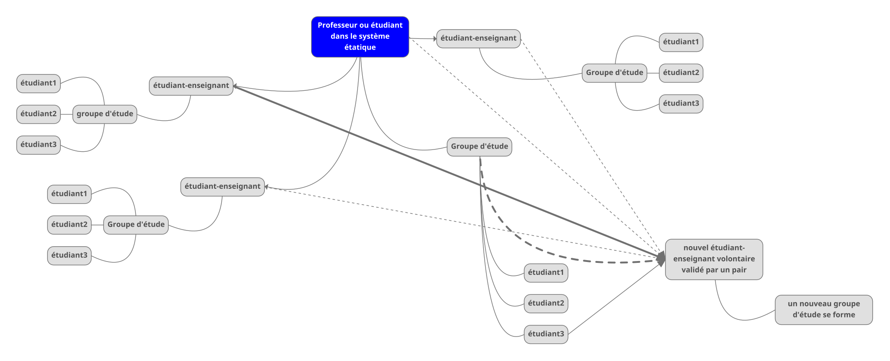
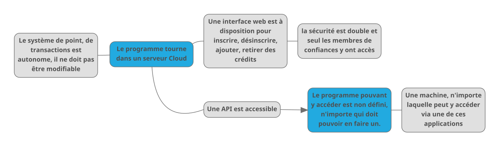
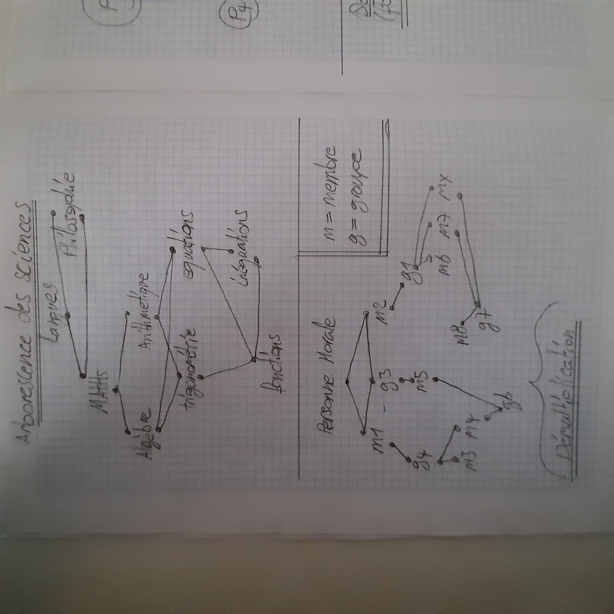
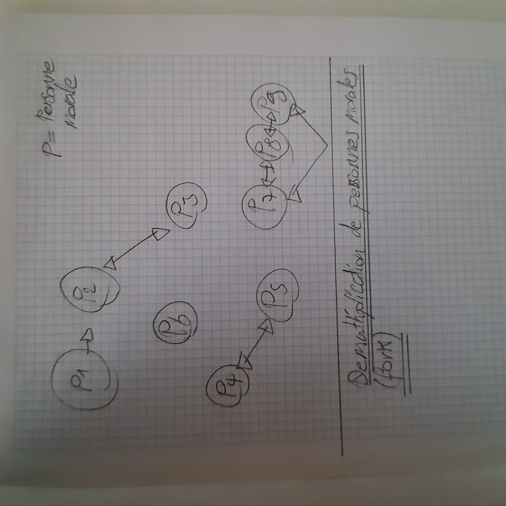

Schémas numériques
Fonctionnement du système
de crédits

mindmap
Fonctionnement
de la démultiplication des enseignants

mindmap
Ceci est une possibilité, il peut y en avoir d'autres.

mindmap
Schémas manuscrits

schéma 1

schéma 2